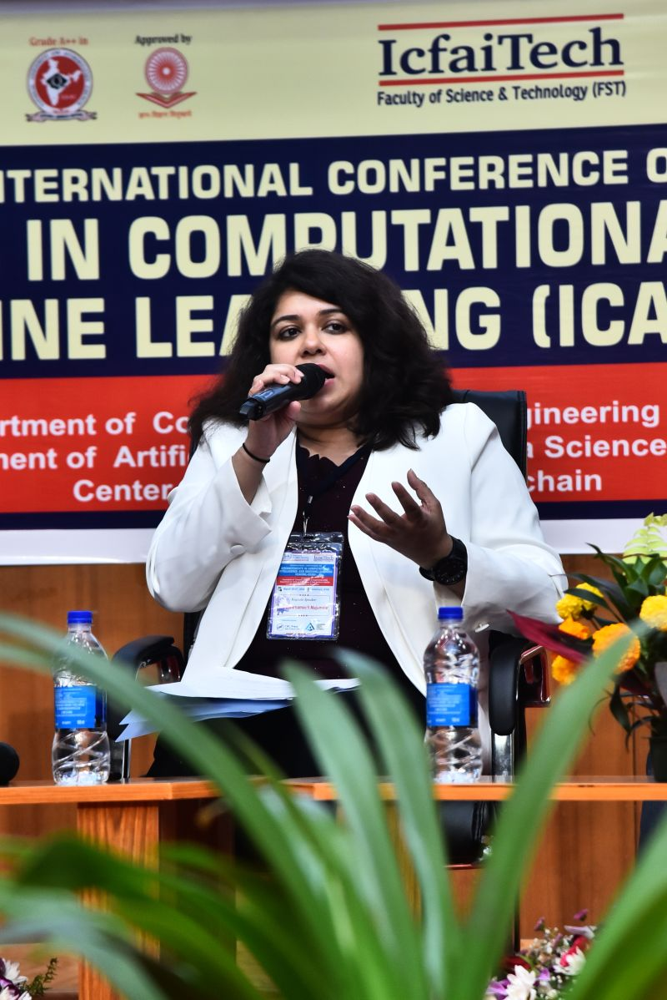
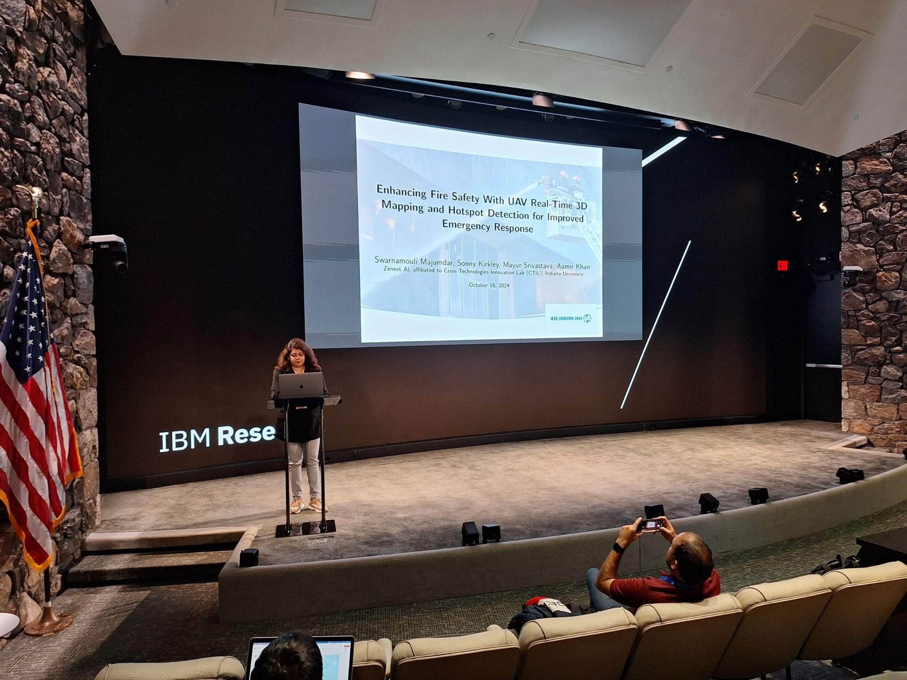
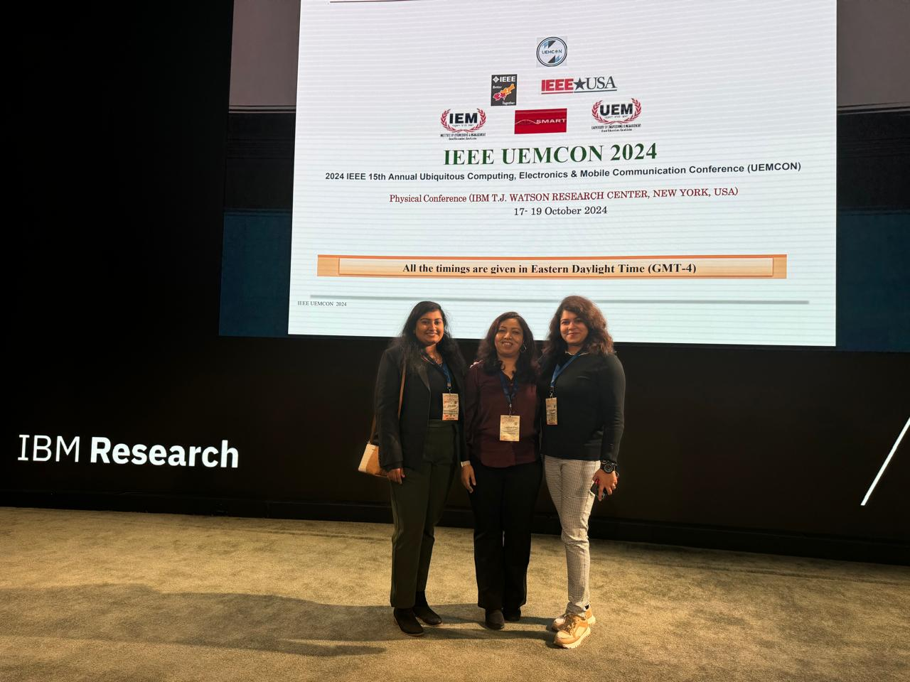
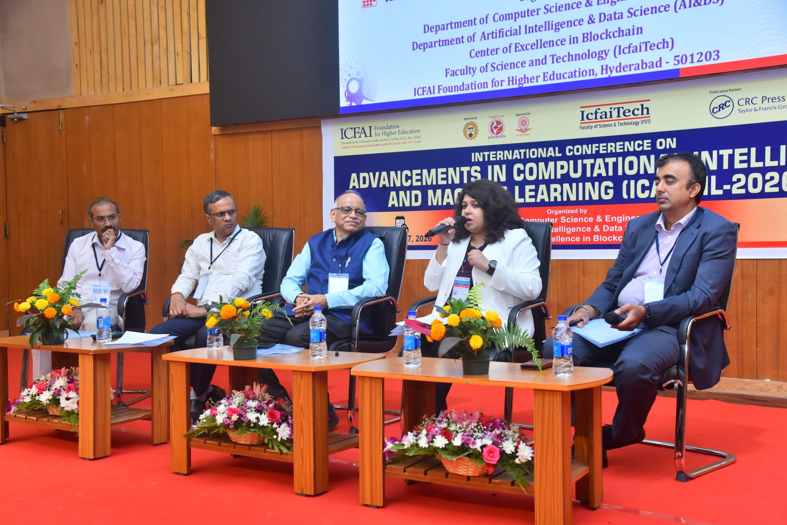

Learning to navigate complex, high-stakes environments
Developing data-informed approaches to forecasting, routing, and sequential decision-making for autonomous vehicles and connected public-safety systems.
Explore directionI study how artificial intelligence and autonomous systems can improve real-world decisions—especially where public safety, human trust, and technology intersect.

My work begins with a simple conviction: the most valuable technology is technology that serves people.
I'm a Ph.D. candidate in Information Systems Engineering at Concordia University and the Founder & CEO of Zenext AI. My research explores artificial intelligence, machine learning, reinforcement learning, autonomous vehicles, and connected systems—with a particular focus on public-safety applications.
Across industry, research, and entrepreneurship, I have worked on the challenges of turning complex data and algorithms into systems that people can understand, operate, and trust. That perspective informs my work on adaptive routing, medical drones, voice-first interfaces, and accountable AI.
More about my journeyFive connected research directions, one shared goal: better decisions and more dependable intelligent systems.
Developing data-informed approaches to forecasting, routing, and sequential decision-making for autonomous vehicles and connected public-safety systems.
Explore directionStudying the role of unmanned aerial systems, connected sensing, and decision support in triage, search and rescue, and firefighter operations.
Explore directionExploring hands-free, voice-enabled interfaces, connected devices, and resilient communication tools designed around the realities of field operations.
Explore directionIntegrating uncertainty, privacy, software assurance, transparency, and human authority into AI-enabled systems that may affect public safety.
Explore directionExamining how intelligent transportation systems and cyber-physical infrastructure can strengthen urban resilience and equitable access to services.
Explore directionSelected reporting, interviews and institutional features about my research and Zenext AI.
Coverage of research by Swarnamouli Majumdar and Anjali Awasthi proposing a six-layer Zero Trust governance framework for public-safety UAVs, including safeguards for AI reasoning, tool use, human authorization, and audit records.
Read the articleA feature on the SkySentience conceptual framework, highlighting transparent, human-supervised UAV decision support, community oversight, and a proposed evaluation pathway—not a field-tested deployment.
An interview with Swarnamouli Majumdar on voice-based AI assistance for first responders, hands-free information access, incident documentation, and the evolution of Zenext AI.
Editor Donny Jackson interviews Swarnamouli at the 2024 5×5 Public Safety Innovation Summit about voice-enabled technology intended to help responders communicate without operating a device by hand.
External reporting and interviews are shown separately from university, government, and conference listings. Linked research descriptions identify conceptual work as such.
A selection of journal articles from my broader publication record.
IEEE Access, vol. 14
IEEE Access, vol. 14
IEEE Access, vol. 14
Discover Robotics, vol. 2, article 26
For the most current indexing and additional records, see ORCID and Scopus.
Selected research frameworks and R&D directions. Descriptions distinguish published studies and concepts from deployed products.
Research framework · 2026
A research model for prioritizing medical-drone missions while accounting for limited capacity, coordination needs, and the continued role of human operators.
Related researchResearch framework · 2026
A conceptual architecture examining uncertainty, transparency, human authorization, and safeguards around UAV-assisted situational awareness.
Related researchResearch & analysis · 2025–26
Research combining spatiotemporal modeling, graph navigation, and reinforcement-learning approaches to study adaptive patrol decisions.
Related researchZenext AI · R&D focus
Voice-enabled assistance and connected-system concepts designed to reduce interaction demands when field personnel need to keep their attention on the task.
Related researchResearch honors, national innovation recognition, and competitive selection reflect a commitment to relevant, responsible technology.
View all recognitionIEEE UEMCON, CCNCPS, and InCIT
IEEE International Conference on Consumer Electronics (ICCE)
Zenext AI selected among seven teams for NIST/PSCR accelerator
NIST/PSCR Tech to Protect Challenge
I value sharing ideas across scientific conferences, technology forums, and practitioner communities.

KEYNOTE & INDUSTRY PANEL · MARCH 2026
ICACIML 2026 at ICFAI Tech, Hyderabad. Keynote speaking and a panel on the future of human intelligence.
Explore talks & photographs ↗Smart IoT-enabled autonomous vehicles for next-generation public safety.
Industry Forum & Exhibition Chair, connecting academic and practitioner communities.
Public-safety technology research and invited speaking engagement.
Talks, collaborations, and technology work along the way.



Research and entrepreneurship grounded in hands-on experience with data science, software systems, autonomous mobility, and industry R&D.
Research. Industry. Innovation.
Concordia University
Zenext AI
System Soft Technologies
State Street Corporation
My teaching interests include programming, software engineering, data science, AI, machine learning, databases, intelligent systems, and responsible computing. I value project-based learning that combines clear fundamentals with real technical problems.
I welcome research collaborations, interdisciplinary projects, invited talks, and conversations with students, industry partners, and public-sector practitioners.
Teaching & academic serviceI'm always interested in thoughtful conversations about research, intelligent technology, and public impact.